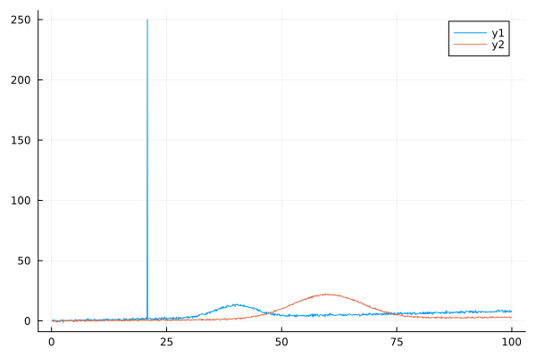
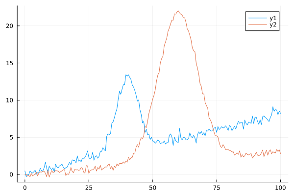
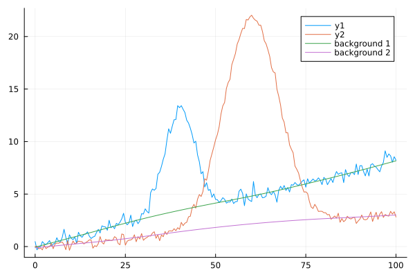
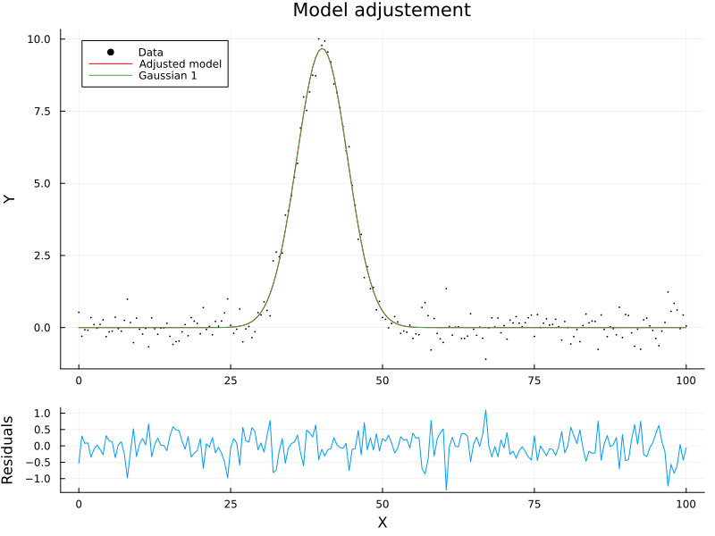

The source files for all examples can be found in /examples.
Processing data
In this notebook, we reproduce the typical steps here for processing spectra
For this example, we create two Gaussian signals randomly sampled along two different X axis, with noise and increasing backgrounds. One of them will also have a strong spike!
Signal creation
using Spectra, Plots
# we create a fake signal with
x_1 = rand(1000)*100
x_2 = rand(1000)*100
# create a signal that is the combination of two gaussian peaks plus a background
background_1 = 0.08 * x_1
background_2 = 0.03 * x_2
# some noise
noise_1 = 0.5*randn(1000)
noise_2 = 0.3*randn(1000)
# the full toy signals
y_1 = gaussian(x_1, 10.0, 40., 5.) .+ background_1 .+ noise_1
y_2 = gaussian(x_2, 20.0, 60., 9.) .+ background_2 .+ noise_2
# one of them will have a spike!
y_1[600] = 250.0
# make a plot of our two spectra
scatter(x_1, y_1)
scatter!(x_2, y_2)
First possible steps
We can do the following steps (not necessarily in this order):
- the X values are randomly sorted, we can solve that using
flipsp - We may like to get our spectra on the same X axis for convenience using
resample - Spikes are present: we can remove them using
despiking - Backgrounds are present: we can remove them using
baseline - Signals are noisy: we can smooth them using
smooth - We can correct for temperature and laser wavelength using
tlcorrection - We can normalize the spectra using
normalise - We can fit the peaks using
fit_peaks
Let's do it!
Sort X Axis
We can sort the data by passing an array of spectra. After that we should have not problem plotting things with lines for instance!
spectrum_1 = flipsp([x_1 y_1])
spectrum_2 = flipsp([x_2 y_2])
plot(spectrum_1[:,1], spectrum_1[:, 2])
plot!(spectrum_2[:,1], spectrum_2[:, 2])
Remove spikes
OK, the plot above reveals a strong spike in one of the signals. We will treat actually both signals with despiking to remove possible spikes from the signals, using the default parameters. In summary, with the default settings, despiking checks if any points in a spectrum differ by more than 3 sigma from the mean value of the 4 neighboring points. You can change the default values to adjust the threshold (for more or less than 3-sigma), or to modify the number of neighboring points considered.
y_1 = despiking(x_1, y_1)
y_2 = despiking(x_2, y_2)1000-element Vector{Float64}:
0.43202214183221227
2.2673319051934886
19.05467129007839
16.28006546928215
0.1911514406207961
3.274329310850362
18.823299079701155
0.276197548618184
3.0923140957943365
2.761079887494442
⋮
2.1849897543424626
2.84857798745424
3.6227572144937397
0.6301637550253393
21.433144262209463
10.42099400031254
1.4583954800986674
8.722421645738837
0.2621855281082648Resample to have everything on the same X axis
Using resample, we get everything on the same X axis. As we have two spectra with two different X axis, we simply provide them in a Vector like this:
x_new = collect(0.:0.5:100)
spectra_ = [[x_1 y_1], [x_2 y_2]]
spectra_same_x = resample(spectra_, x_new)
plot(x_new, spectra_same_x)
We see tiny problems with the interpolation, we can solve them using another method from DataInterpolations.jl, such as Linear:
spectra_same_x = resample(spectra_, x_new, method="LinearInterpolation")
plot(x_new, spectra_same_x)Remove a background
Now we can remove a background using the baseline function. Similarly to the other functions, you can pass x and y vectors or a x vectors and an array of y spectra. We will do that here:
ys_corrected, ys_baselines = baseline(x_new, spectra_same_x, method="arPLS")
p1 = plot(x_new, spectra_same_x)
plot!(x_new, ys_baselines, labels=["background 1" "background 2"])
Measure peak parameters
We can now measure the parameters of each peak, for instance their centroid:
println("Centroids are:")
println(centroid(x_new, ys_corrected))Centroids are:
[39.83725025030715, 59.9053187802566]The peakmeas function to get access to a bunch of parameters: intensity, position, hwhm, centroïd
println("intensity, position, hwhm, centroïd are:")
println(peakmeas(x_new, ys_corrected[:,1]))intensity, position, hwhm, centroïd are:
(9.852677699505744, 40.5, 5.0, 39.82623798577805)If multiple peaks with a background are present, the best is to use the findpeaks() function It can even make a nice plot. Beware that you may have to tweak the windowsize, minwidth, minheight to detect only the main peaks... See the documentation of find_peaks for details. for more precise usage, also see the Peaks.jl package.
result = find_peaks(x_new, ys_corrected[:,1], window_size=1, min_width=2., min_height=2.0, smoothing=true)
println("Peak positions: ", result.peak_positions)
println("Peak heights: ", result.peak_heights)
println("Peak HWHMs: ", result.peak_hwhms)
println("Peak centroids: ", result.peak_centroids)
result.plot_peaks
Peak fitting!
We can retrieve the parameters of the two peaks using peak fitting too! We do a quick fit with very loose prior uncertainties on the peak parameters, and unrestrictive lowerbounds and upperbounds. Those informations are provided in a vector of tuples, one tuple per peak: (type, initialparams, prior uncertainties, lowerbounds, upper_bounds)
peaks_info = [
# (type, initial_params, prior uncertainties, lower_bounds, upper_bounds)
(:gaussian, [10.5, 50.0, 5.0], [100.0, 100.0, 100.0], [0., 0., 0.], [Inf, Inf, Inf]),
]1-element Vector{Tuple{Symbol, Vararg{Vector{Float64}, 4}}}:
(:gaussian, [10.5, 50.0, 5.0], [100.0, 100.0, 100.0], [0.0, 0.0, 0.0], [Inf, Inf, Inf])we declare the context and fit the signals
ctx_1 = prepare_context(x_new, ys_corrected[:,1], peaks_info)
ctx_2 = prepare_context(x_new, ys_corrected[:,2], peaks_info)
result_1 = fit_peaks(ctx_1, backend=:Optim)
result_2 = fit_peaks(ctx_2, backend=:Optim)
println("Parameters and fit for the first signal:")
print_params(result_1.peak_results)
plot_fit(ctx_1, result_1.peak_results)Parameters and fit for the first signal:
Peak 1 (gaussian):
amplitude: 9.76 ± 0.31
center: 40.08 ± 0.16
width: 5.0 ± 0.18
area: 103.9 ± 3.3
println("Parameters and fit for the second signal:")
print_params(result_2.peak_results)
plot_fit(ctx_2, result_2.peak_results)Parameters and fit for the second signal:
Peak 1 (gaussian):
amplitude: 19.98 ± 0.24
center: 59.99 ± 0.1
width: 8.92 ± 0.12
area: 379.3 ± 4.5
This page was generated using Literate.jl.